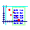

My Java programs
- ChemAxon
MarvinSketch and MarvinView:
molecule sketcher and viewer applets, applications and beans.
- Graph Redigitizer
Tool for reading coordinates of data points from linear and
logscaled graphs. (free source!)
- SlideProject: slide show program
that supports zooming, highlighted points, animated multi-image slides
(sequences of JPEG, GIF or PNG files), MPEG movies, audio tracks (AU and WAV),
text fading in/out, additional images fading in/out, panorama scrolling etc.
Related command line tools:
- PxWAV - Finds and extracts WAV
audio tracks from JPEGs and other files.
- PBinGrep - Searches binary
files, prints the locations of matches.
- JPEG Compression Quality Tester
- Approximate compression quality calculation for JPEG files.
(free source!)
Obsolete stuff
- Marvin ARchiver (MAR):
A command line utility like JAR or TAR. Creates self extracting archives and
also makes it possible to compress a full application into one class
file. (free source!)
MARvInstall (MARI):
Application installer class maker, based on MAR.
Works in Unix, RedHat Linux and older Windows versions.
Pre-alpha, discontinued project. See the B/mar directory if you
are interested.
- My Bug Collection:
Java-related bugs in web browsers and operating systems, workarounds,
bugware detection.
© 1998-2004 Peter Csizmadia